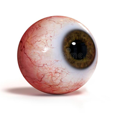

Sea bienvenido!
¿Qué es el ojo?

El ojo es un órgano visual que detecta la luz y la convierte en impulsos electroquímicos que viajan a través de neuronas por el nervio óptico. La célula fotorreceptora más simple de la visión consciente asocia la luz al movimiento. En organismos superiores el ojo es un sistema óptico complejo que capta la luz de los alrededores, regula su intensidad a través de un diafragma (iris), enfoca el objetivo gracias a una estructura ajustable de lentes (cristalino) para formar la imagen, que luego convierte en un conjunto de señales eléctricas que llegan al cerebro a través de rutas neuronales complejas que conectan, mediante el nervio óptico, el ojo a la corteza visual y otras áreas cerebrales.